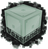
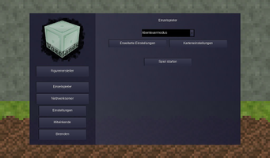
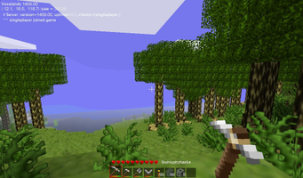
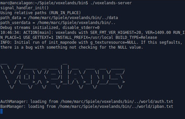

Voxelands
Dieser Artikel wurde für die folgenden Ubuntu-Versionen getestet:
Ubuntu 16.04 Xenial Xerus
Ubuntu 14.04 Trusty Tahr
Zum Verständnis dieses Artikels sind folgende Seiten hilfreich:

Voxelands  (ehemals Minetest-Classic) ist ein Open-World-Aufbauspiel, welches aus Minetest hervorgegangen ist. Im Überlebensmodus müssen Rohstoffe gewonnen werden, um daraus Werkzeuge herstellen zu können. Im Kreativmodus kann der Spieler der eigenen Phantasie freien Lauf lassen und eine Welt erschaffen. Im Abenteuermodus erfüllt der Spieler Aufgaben in einer vorgegebenen Umgebung. Die Abenteuer können im Einzelspieler- oder Mehrspielermodus erlebt werden. Die Entwickler bieten offizielle Server an.
(ehemals Minetest-Classic) ist ein Open-World-Aufbauspiel, welches aus Minetest hervorgegangen ist. Im Überlebensmodus müssen Rohstoffe gewonnen werden, um daraus Werkzeuge herstellen zu können. Im Kreativmodus kann der Spieler der eigenen Phantasie freien Lauf lassen und eine Welt erschaffen. Im Abenteuermodus erfüllt der Spieler Aufgaben in einer vorgegebenen Umgebung. Die Abenteuer können im Einzelspieler- oder Mehrspielermodus erlebt werden. Die Entwickler bieten offizielle Server an.
|  |
| Menü |
|  |
| Spielszene |
Installation¶
Das Spiel ist kein Bestandteil der offiziellen Paketquellen. Man muss es daher selbst aus dem Quelltext kompilieren.
Vorbereitung¶
Um das Spiel aus dem Quellcode zu bauen, werden die folgenden Pakete benötigt [1]:
build-essential
cmake
git
libbz2-dev
libfreetype6-dev
libgl1-mesa-dev
libirrlicht-dev
libjpeg8-dev
libopenal-dev
libpng12-dev
libsqlite3-dev
libvorbis-dev
libxxf86vm-dev
 mit apturl
mit apturl
Paketliste zum Kopieren:
sudo apt-get install build-essential cmake git libbz2-dev libfreetype6-dev libgl1-mesa-dev libirrlicht-dev libjpeg8-dev libopenal-dev libpng12-dev libsqlite3-dev libvorbis-dev libxxf86vm-dev
sudo aptitude install build-essential cmake git libbz2-dev libfreetype6-dev libgl1-mesa-dev libirrlicht-dev libjpeg8-dev libopenal-dev libpng12-dev libsqlite3-dev libvorbis-dev libxxf86vm-dev
Achtung!
Da Voxelands aktuell sehr aktiv entwickelt wird, können sich die oben angegebenen Abhängigkeiten jederzeit ändern. Falls ein Problem auftritt, diesen bitte in der Diskussion melden. Dieser Artikel wurde das letzte Mal im November 2016 mit Voxelands 1608.01 getestet.
Quellcode¶
Von der Projektseite  das aktuelle Archiv mit dem Quellcode herunterladen und im Homeverzeichnis entpacken [2]. Alternativ kann die aktuelle Version via Git bezogen werden [3][7]:
das aktuelle Archiv mit dem Quellcode herunterladen und im Homeverzeichnis entpacken [2]. Alternativ kann die aktuelle Version via Git bezogen werden [3][7]:
git clone https://gitlab.com/voxelands/voxelands.git
Kompilieren¶
In den Ordner mit dem Quellcode wechseln (z.B. ~/voxelands). Anschließend kann der Quellcode übersetzt [4] [7] werden:
cmake -DRUN_IN_PLACE=1 . ## Build a version that runs directly from the source directory: make -j2 ## -j2 = Anzahl der Prozessorkerne. Manche PCs schaffen auch -j4 oder mehr.
Über ./voxelands kann man das Spiel anschließend starten [5] und auf Wunsch einen Menüeintrag [6] vornehmen.
Spielstart¶
Im Menü kann der Spieler zwischen den folgenden Möglichkeiten wählen:
| Bedienung | |
| Menüpunkt | Beschreibung |
| "Figurenersteller" | Eigene Spielfigur erstellen/anpassen. |
| "Einzelspieler" | Lokales Spiel starten. Hier wird ein lokaler Server erstellt - zu diesem kann sich nur der Einzelspieler-Client verbinden. |
| "Netzwerkserver" | An einer Mehrspielerpartie teilnehmen. |
| "Einstellungen" | Grafikeinstellungen, Vollbild- / Fenstermodus ändern und die Tastenbelegung anpassen. |
| "Mitwirkende" | Credits |
| "Ende" | Spiel beenden |
Server¶
|  |
| Dedizierter Server |
Im Mehrspielermodus kann man sich mit einem öffentlichen Server aus der Liste verbinden und mit anderen das Abenteuer bestreiten. Die Verbindungsdaten zu den Servern können auf den folgenden Seiten eingesehen werden:
Eigener Server¶
Voxelands beinhaltet einen Server, welcher über die Kommandozeile gesteuert werden kann. Dadurch ist es möglich, einen lokale, dedizierten Server zu erstellen. Dafür ist keine grafische Oberfläche nötig. Um einen dedizierten Server zu starten, verwendet man den Befehl [6]:
./voxelands-server
Es empfiehlt sich, den Server in einem separaten Screen zu starten, da man somit die Terminalsitzung trennen und später fortführen kann. Das verhindert, dass beim Trennen der Verbindung zum Server der Voxelands-Server als Instanz abgewürgt wird.
Tastenkürzel¶
Die wichtigsten Tastenkürzel können der Tabelle entnommen werden. Die Belegung kann im Spiel neu zugewiesen werden.
| Tastenkürzel | |
| Taste(n) | Funktion |
 | Spieler bewegen |
| E | Benutzen |
| ⇧ | Schleichen |
| Springen | |
| I | Inventar |
| T | Chat |
| ⇧ + 7 | Befehl eingeben |
| K | Fliegen (de)aktivieren |
Infobox¶
| Voxelands | |
| Genre: | Open-World-Spiel |
| Sprache: |  |
| Veröffentlichung: | 2013+ |
| Entwickler: | Lisa Milne & others |
| Systemvoraussetzungen: | - |
| Medien: | Download |
| Strichcode / EAN / GTIN: | - |
| Läuft mit: | nativ |
- Erstellt mit Inyoka
-
 2004 – 2017 ubuntuusers.de • Einige Rechte vorbehalten
2004 – 2017 ubuntuusers.de • Einige Rechte vorbehalten
Lizenz • Kontakt • Datenschutz • Impressum • Serverstatus -
Serverhousing gespendet von